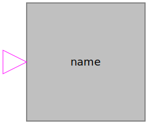
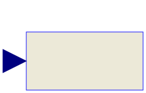

This library is just temporarily present. The components of this library will be present in the future in the Modelica standard library (with the new block connectors) and in the UserInteraction library that is currently under development.
| Name | Description |
|---|---|
| Define Real parameter (GUI not yet satisfactory) | |
| Returns true, if at least on element of the Boolean input vector is true | |
| Returns true, if all elements of the Boolean input vector are true | |
|  RadioButton | Button that sets its output to true when pressed and is reset when an element of 'reset' becomes true |
|  NumericValue | Show value of Real input signal dynamically |
| Dynamically show Boolean input signal (false/true = white/green color) |